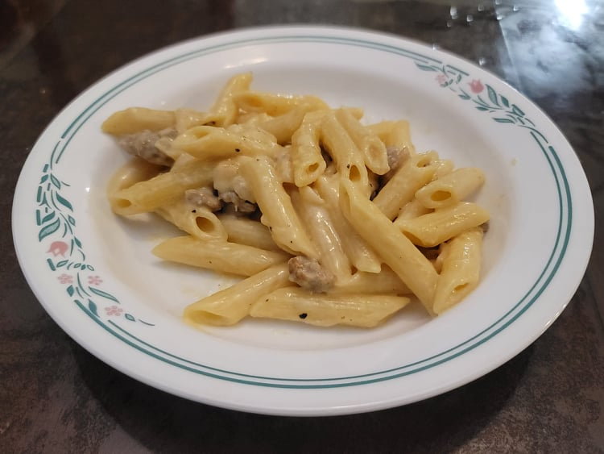

Pasta alla Norcina

Ingredients:
- 1 lb Dried penne
- 1 lb Italian sausage, casing removed crumbled
- 1 Small onion, diced
- 4 cloves Garlic, minced
- 3 tbsp Olive oil
- 1/2 cup White wine
- 1 cup Heavy cream
- 1/2 cup Pecorino, grated
- Black pepper, freshly ground, to taste
- Salt, to taste
Instructions:
- Bring a large pot of salted water to a boil.
- Heat the olive oil over medium heat in a large pan and add the onion. After about 3-4 minutes and the onion is translucent, add in the garlic. Cook for 1-2 more minutes or until fragrant.
- Add in the ground sausage and sauté until browned. Once browned, taste and add salt if needed.
- At this point the sauce should be about 10 minutes from being finished. Add in the pasta to the boiling water.
- While the pasta cooks, add the white wine to the sausage pan. Let cook until all the alcohol has reduced, about 4 minutes. Then mix in the heavy cream and cook over medium-low. Reduce until thick.
- After the pasta has been cooking for about 8-9 minutes, it should be ready. Remove the pasta from the water and add it to the pan. Mix and toss the pasta for about 2 minutes in the pan, adding in about 1/3 - 1/2 cup pasta water as the sauce reduces.
- Remove the pan from heat. Slowly add in the pecorino while tossing and mixing. If the pasta gets too dry or tight, add in some more pasta water. Taste and adjust for salt and add a generous amount of freshly ground black pepper to taste.